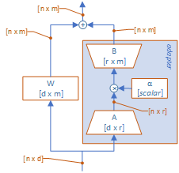
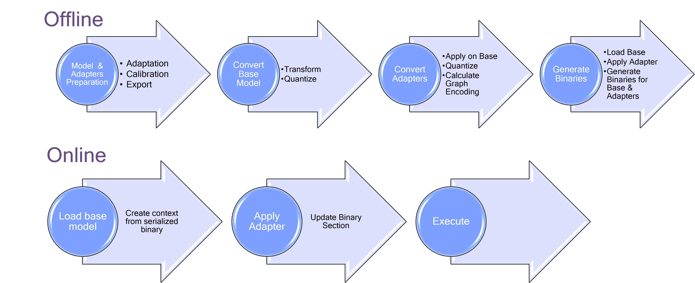

LoRA v2 Overview¶
Adapter Requirements¶
PEFT-based Adapters (PEFT = Parameter-Efficient Fine-Tuning)
All Adapters to a given base graph:
Have same architecture and attachment points
Have the same max rank and same precision
Supported Functionality¶
Currently supported for Android only
Currently supported for ONNX models and HTP backend only
Apply a single adapter at a given time (e.g single branch)
Dynamic switching of adapter (e.g. without loading/unloading of base model)
Regain accuracy on Quantization by creating tailored encodings per adapter during offline conversion
Adapter weights are quantized, and each weight has its own encodings
Activation encodings for each adapter are different and optimized during calibration process
Requires full offline preparation of both Base Model & Adapters, with Quantization done by AIMET
Offline preparation only supported on :Linux x86 host platforms
Disclaimer: Both base model context binary and adapter binary files MUST be prepared using same QAIRT SDK version.
High-Level end-to-end workflow¶
Notes : 1. For switching adapters, “Apply adapter” can be done as needed between calls to execute 2. Setting Alpha is done by updating the relevant input tensor